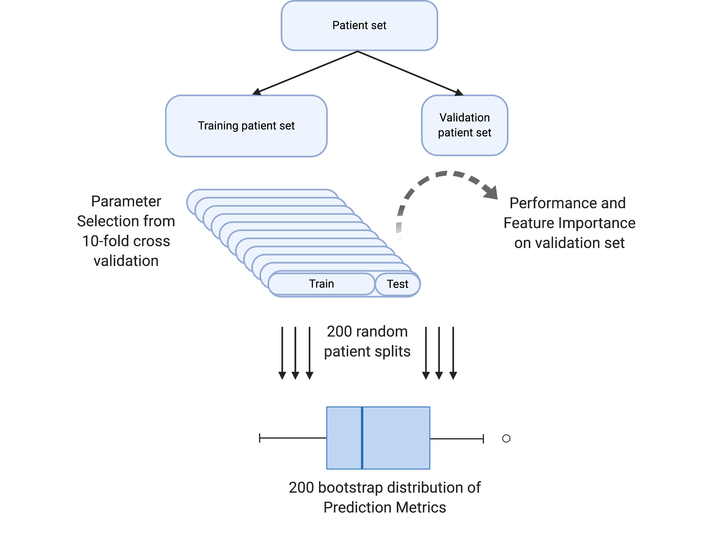

Robust and interpretable prediction
Binary and Multi-classification algorithm for adverse outcome detection, survival classification, and endpoint prediction (see references for details)

Objectives of this project
Build the mccv python package: easily implement and perform MCCV for learning and prediction tasks.
Showcase accessibly to build, validate, and interpret MCCV classifiers.
Demonstrate use in both python and R for diverse community implementations.
Installation
mkdir ~/my_directory #choose where to clone the mccv repository
cd ~/my_directory
git clone https://github.com/ngiangre/mccv.git
cd mccv/
python3 -m pip install .
Usage
import pandas as pd= pd.read_csv('data/data.csv' ,index_col= 0 ) # Feature column name is 'biomarker' and response column name is 'status'
status biomarker
obs
1 0 1.665731
2 0 -0.875837
3 0 -1.391374
4 0 -0.297352
5 1 0.189857
import mccv= mccv.mccv(num_bootstraps= 200 )'biomarker' ]] )'status' ]] )#Output for n in mccv_obj.mccv_data:print (n)
Model Learning
bootstrap model ... train_roc_auc validation_roc_auc
0 0 Logistic Regression ... 0.529453 0.611111
1 1 Logistic Regression ... 0.515235 0.732143
2 2 Logistic Regression ... 0.543056 0.400000
3 3 Logistic Regression ... 0.519728 0.727273
4 4 Logistic Regression ... 0.554054 0.574074
[5 rows x 5 columns]
Feature Importance
bootstrap feature importance model
0 0 biomarker 1.010712 Logistic Regression
1 0 Intercept -0.599959 Logistic Regression
0 1 biomarker 0.509404 Logistic Regression
1 1 Intercept -0.226465 Logistic Regression
0 2 biomarker 1.591529 Logistic Regression
Patient Predictions
bootstrap model y_pred y_proba y_true
obs
27 0 Logistic Regression 0 0.384426 1
87 0 Logistic Regression 1 0.601268 0
3 0 Logistic Regression 0 0.401035 0
56 0 Logistic Regression 1 0.512297 1
76 0 Logistic Regression 0 0.392718 0
Performance
model metric performance_bootstrap value
0 Logistic Regression roc_auc 0 0.468092
1 Logistic Regression roc_auc 1 0.467906
2 Logistic Regression roc_auc 2 0.481271
3 Logistic Regression roc_auc 3 0.481514
4 Logistic Regression roc_auc 4 0.476277
for n in mccv_obj.mccv_permuted_data:print (n)
Model Learning
bootstrap model ... train_roc_auc validation_roc_auc
0 0 Logistic Regression ... 0.506233 0.642857
1 1 Logistic Regression ... 0.492030 0.703704
2 2 Logistic Regression ... 0.510135 0.537037
3 3 Logistic Regression ... 0.506944 0.703704
4 4 Logistic Regression ... 0.589547 0.340909
[5 rows x 5 columns]
Feature Importance
bootstrap feature importance model
0 0 biomarker -0.195845 Logistic Regression
1 0 Intercept 0.078774 Logistic Regression
0 1 biomarker -0.630019 Logistic Regression
1 1 Intercept 0.238267 Logistic Regression
0 2 biomarker 0.165976 Logistic Regression
Patient Predictions
bootstrap model y_pred y_proba y_true
obs
27 0 Logistic Regression 1 0.513434 1
87 0 Logistic Regression 0 0.470765 0
3 0 Logistic Regression 1 0.510061 0
56 0 Logistic Regression 0 0.488249 1
76 0 Logistic Regression 1 0.511744 1
Performance
model metric performance_bootstrap value
0 Logistic Regression roc_auc 0 0.439984
1 Logistic Regression roc_auc 1 0.442234
2 Logistic Regression roc_auc 2 0.449432
3 Logistic Regression roc_auc 3 0.439897
4 Logistic Regression roc_auc 4 0.449552
if (! requireNamespace ("readr" )){install.packages ("readr" )}
Loading required namespace: readr
library (readr)<- read_csv ("data/data.csv" ,col_types = c ("iid" )) #set obs as integer, status as integer, and biomarker as double head (data)
# A tibble: 6 × 3
obs status biomarker
<int> <int> <dbl>
1 1 0 1.67
2 2 0 -0.876
3 3 0 -1.39
4 4 0 -0.297
5 5 1 0.190
6 6 0 2.20
if (! requireNamespace ("reticulate" )){install.packages ("reticulate" )}= reticulate:: import ('mccv' )= mccv$ mccv (num_bootstraps = as.integer (200 ))= reticulate:: r_to_py (data[,c ('obs' ,'biomarker' )])= X$ set_index (reticulate:: r_to_py ('obs' ))= reticulate:: r_to_py (data[,c ('obs' ,'status' )])= y$ set_index (reticulate:: r_to_py ('obs' ))$ set_X (X)$ set_Y (y)$ run_mccv ()$ run_permuted_mccv ()#Output lapply (mccv_obj$ mccv_data,head)
Warning in py_to_r.pandas.core.frame.DataFrame(object): index contains
duplicated values: row names not set
Warning in py_to_r.pandas.core.frame.DataFrame(object): index contains
duplicated values: row names not set
$`Model Learning`
bootstrap model test_roc_auc train_roc_auc validation_roc_auc
1 0 Logistic Regression 1.0000 0.5294525 0.6111111
2 1 Logistic Regression 0.8000 0.5152355 0.7321429
3 2 Logistic Regression 1.0000 0.5430556 0.4000000
4 3 Logistic Regression 0.8750 0.5197279 0.7272727
5 4 Logistic Regression 0.8125 0.5540541 0.5740741
6 5 Logistic Regression 1.0000 0.5499325 0.5357143
$`Feature Importance`
bootstrap feature importance model
1 0 biomarker 1.0107122 Logistic Regression
2 0 Intercept -0.5999590 Logistic Regression
3 1 biomarker 0.5094043 Logistic Regression
4 1 Intercept -0.2264652 Logistic Regression
5 2 biomarker 1.5915295 Logistic Regression
6 2 Intercept -0.9376893 Logistic Regression
$`Patient Predictions`
bootstrap model y_pred y_proba y_true
1 0 Logistic Regression 0 0.3844259 1
2 0 Logistic Regression 1 0.6012685 0
3 0 Logistic Regression 0 0.4010353 0
4 0 Logistic Regression 1 0.5122970 1
5 0 Logistic Regression 0 0.3927179 0
6 0 Logistic Regression 0 0.4658372 1
$Performance
model metric performance_bootstrap value
1 Logistic Regression roc_auc 0 0.4680915
2 Logistic Regression roc_auc 1 0.4679058
3 Logistic Regression roc_auc 2 0.4812715
4 Logistic Regression roc_auc 3 0.4815138
5 Logistic Regression roc_auc 4 0.4762772
6 Logistic Regression roc_auc 5 0.4696288
lapply (mccv_obj$ mccv_permuted_data,head)
Warning in py_to_r.pandas.core.frame.DataFrame(object): index contains
duplicated values: row names not set
Warning in py_to_r.pandas.core.frame.DataFrame(object): index contains
duplicated values: row names not set
$`Model Learning`
bootstrap model test_roc_auc train_roc_auc validation_roc_auc
1 0 Logistic Regression 0.5500 0.5062327 0.6428571
2 1 Logistic Regression 0.8000 0.4920305 0.7037037
3 2 Logistic Regression 0.5625 0.5101351 0.5370370
4 3 Logistic Regression 0.8000 0.5069444 0.7037037
5 4 Logistic Regression 0.9000 0.5895470 0.3409091
6 5 Logistic Regression 0.7000 0.5360111 0.5178571
$`Feature Importance`
bootstrap feature importance model
1 0 biomarker -0.19584525 Logistic Regression
2 0 Intercept 0.07877354 Logistic Regression
3 1 biomarker -0.63001932 Logistic Regression
4 1 Intercept 0.23826705 Logistic Regression
5 2 biomarker 0.16597553 Logistic Regression
6 2 Intercept -0.01437680 Logistic Regression
$`Patient Predictions`
bootstrap model y_pred y_proba y_true
1 0 Logistic Regression 1 0.5134336 1
2 0 Logistic Regression 0 0.4707655 0
3 0 Logistic Regression 1 0.5100614 0
4 0 Logistic Regression 0 0.4882488 1
5 0 Logistic Regression 1 0.5117439 1
6 0 Logistic Regression 0 0.4972600 1
$Performance
model metric performance_bootstrap value
1 Logistic Regression roc_auc 0 0.4399838
2 Logistic Regression roc_auc 1 0.4422338
3 Logistic Regression roc_auc 2 0.4494321
4 Logistic Regression roc_auc 3 0.4398971
5 Logistic Regression roc_auc 4 0.4495525
6 Logistic Regression roc_auc 5 0.4435271
Contribute
Please do! Reach out to Nick directly (nick.giangreco@gmail.com), make an issue, or make a pull request.
License
This software is released under the MIT license, which can be found in LICENSE in the root directory of this repository.